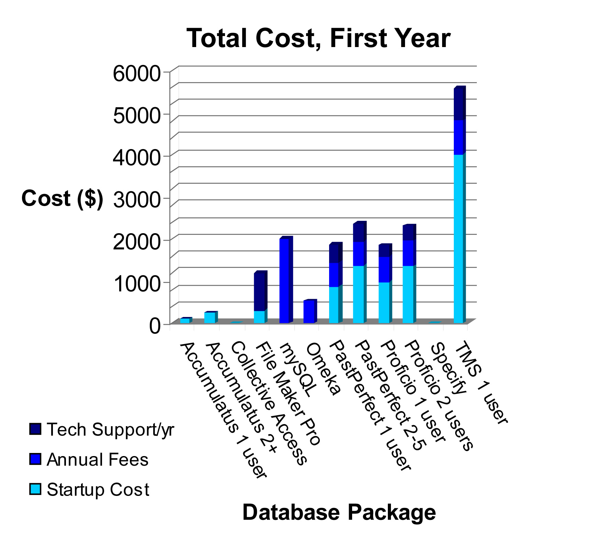

|
This page provides an overview of nine database programs commonly used or collections management. To search for a certain specification (for example, Windows 7), please press CTRL+F to search this page. To go directly to a program's official webpage, please click on its name in the first row of its table.
To skip ahead to a particular database, or for a direct comparison of operating systems, program prices, and tech support prices, click your selection on the left side of the page. Please note that the sections labeled "Ease of Use" are referring to use by collections staff, interns, and volunteers.
| Accumulatus |
| Operating System(s) |
Windows XP & 7
Linux |
| Necessary RAM | 0.5GB-2GB |
| Hard Drive Space | 280MB |
| Program Price | $99 for 1 user
$269 network (multi-user) |
| Annual fees | none |
| Web Access | Yes, hosted by program company or museum |
| Web Input | Available for network users |
| Tech Support | Only online feedback form |
| Number of Specimens Supported | collections of all sizes |
| Customizability | Low; geared towards life sciences |
| Data Import | Free data conversion with service |
| Ease of Use | Fairly easy input |
| Demo Available? |
Yes, click here |
| Collective Access |
| Operating System(s) |
Windows XP & 7
Mac OSx10.5+
Linux |
| Other Requirements | mySQL 5+
PHP 5.2.3+ |
| Program Price | none |
| Annual fees | none |
| Web Access | Yes, program called Pawtuckit |
| Tech Support | Forum Available |
| Customizability |
Installation profiles available from partner insitutions; geared towards Arts and Humanities |
| Data Import | With plugin and writing SQL script |
| Data Export | Tab delimited text, EAD XML |
| Ease of Use | Noticeable learning curve |
| Demo Available? |
Yes, click here |
| File Maker Pro |
| Operating System(s) |
Windows XP
Windows 7
Mac OSx 10.6 |
| Necessary RAM | 1GB-2GB |
| Program Price | $299 |
| Annual fees | none |
| Web Access | Yes, software outputs web coded data |
| Web Input | Yes, from Mac and PC |
| Tech Support | $899 annual contract
$75/call without contract |
| Customizability | Extremely high |
| Data Import |
Imports *.tab, *. txt, *.csv, *.mer, *.xls, *.xlsx, *.dbf, *.xml |
| Data Export |
Exports *.tab, *.csv, *.htm, *.xml, *.mer, *.dbf, *.xls, *.xlsx |
| Ease of Use | Extremely Easy |
| Demo Available? |
Yes, click here |
| MySQL |
| Operating System(s) |
Windows 32 and 64 bit
Mac OSx
Linux |
| Program Price | none |
| Annual fees | $2,000 for basic features & support |
| Web Input | Over the network |
| Tech Support | Included in annual subscription |
| Number of Specimens Supported | collections of all sizes |
| Customizability | Geared towards business
Is used with some other collection database software |
| Ease of Use | Steep learning curve for those without prior experience |
| Demo Available? |
Yes, click here (server required) |
| Omeka |
| Operating System(s) |
Windows
Mac OSx
Linux OS |
| Other Requirements | MySQL 5+
PHP 5.2.4+ |
| Program Price | none |
| Annual fees |
none up to 500 MB storage
$49/yr for 1GB (1 user)
$99/year for 2 GB
$299/yr for 5 GB
$999/yr for 25GB (institutions) |
| Web Access | Yes, free |
| Web Input | With simple sign-in; unlimited users |
| Tech Support | Online forum |
| Number of Specimens Supported | At least 9,000 |
| Customizability | Fairly customizable |
| Data Import | Can import *.csv with plugin |
| Data Export | With tool such as PHPMyAdmin |
| Ease of Use | Faily intuitive |
| Demo Available? |
Yes, click here |
| Other Features |
Social bookmarking, RSS feed, online exhibits |
| PastPerfect |
| Operating System(s) |
Windows XP, Vista, & 7 |
| Necessary RAM | 1GB-2GB |
| Hard Drive Space | ~2GB |
| Program Price | $870 for 1 user
+ $495 for 2-5 network users
|
| Annual fees | $440 to host first 10,000 specimens online
$245 to host each additional 10,000 |
| Web Access | Yes, hosted by program company or possibly museum |
| Web Input | none |
| Tech Support | $430/yr for 1 user |
| Number of Specimens Supported | over 3 million |
| Customizability |
Comes with standard data fields, with ability to add up to 20 customized fields
Authority files available |
| Data Import | Import as foxpro, excel2, excel5, ascii, ascii tab delimited |
| Data Export | Export as foxpro, excel2, excel/html, acsii, xml, microtext |
| Ease of Use |
Intuitive data entry
Small learing curve for first-time users |
| Demo Available? |
Yes, click here |
| Proficio |
| Operating System(s) | Windows 2000-2008 & XP |
| Necessary RAM | 1GB |
| Hard Drive Space | 500MB - 2GB |
| Program Price | $975 for 1 user
$1,350 for 2 users |
| Annual fees | $599/yr for online hosting |
| Web Access |
Yes, hosted on Re:discovery site
Requires $975 one-time fee |
| Web Input | none |
| Tech Support | $270/yr for 1 user
$360/yr for 2 users |
| Number of Specimens Supported |
No limit in standard program
Proficio Express limit is 4GB |
| Customizability |
Can customize reports, field & types, lexicons, and authority files |
| Data Import | Import tool in software
Import services available for fee |
| Data Export | Export as *.pdf, *.xls, *.html, *.xml, *.txt |
| Demo Available? | No |
| Specify |
| Operating System(s) |
Windows XP, Vista, & 7
MacOS Leopard 10.5.4+
Linux |
| Other Requirements | MySQL 5.1+ |
| Program Price | none |
| Annual fees | none |
| Customizability | Set of forms available for various disciplines |
| Ease of Use | Takes some time ot learn and set up |
| Demo Available? |
Yes, click here (server required) |
| The Museum System (TMS) |
| Operating System(s) | Windows |
| Necessary RAM | 0.5GB-2GB |
| Hard Drive Space | 500MB |
| Program Price | $4,000 per user |
| Annual fees | $800/yr for maintenance |
| Web Access | Yes, through optional program called eMuseum |
| Web Input | Probably over network |
| Tech Support | $750 per user per year |
| Customizability | Seems geared towards Arts & Humanities |
| Demo Available? | No |
Database Comparisons
| |
| |
|
|
|
 | |
|
 | |
|
|